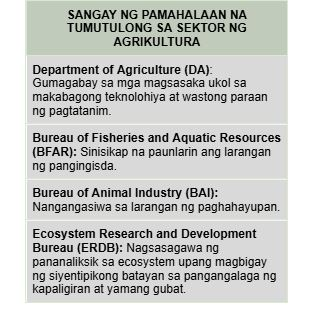

Isang agham at sining na may kinalaman sa pagpaparami ng mga hayop at mga tanim o halaman
Ito ay may kaugnayan sa lahat ng gawain na sangkot ang mga hayop at halaman
AGER=Lupa; CULTURA=Paglilinang
Pangunahing pananim: palay, mais, niyog, tubo, saging, pinya, atbp. na karaniwang kinokonsumo sa loob at labas ng bansa.
Tinatayang umabot ng ₱797.731 bilyon ang kita mula sa pagsasaka
Nauuri sa tatlo: komersiyal, munisipal, at aquaculture
Bahagi din nito ay ang panghuhuli ng hipon, sugpo
May kinalaman sa mga hayop na itinaas para sa karne, hibla, gatas, itlog, atbp.
Kasama rito ang pang-araw-araw na pangangalaga, pumipili ng pag-aanak at pagpapalaki ng mga hayop
Patuloy na nililinang ang ating mga kagubatan bagamat tayo ay nahaharap sa suliranin ng pagkaubos ng mga yaman nito
Pinagkukunan ng: plywood, tabla, troso, at veneer
Pinagkakakitaan din ang rattan, nipa, anahaw, kawayan, atbp.
kakulangan ng mga pasilidad at imprastraktura sa kabukiran
pagliit ng lupang sakahan.
paggamit ng makabagong teknolohiya
kakulangan ng suporta mula sa iba pang sektor
pagbibigay prayoridad sa sektor ng industriya, pagdagsa ng dayuhang kalakal
Climate Change
mapanirang operasyon ng malalaking komersiyal na mangingisda
epekto ng polusyon sa pangisdaan.
lumalaking populasyon ng bansa
kahirapan sa hanay ng mga mangingisda
pagkakaroon ng mga peste sa alagang hayop tulad ng baboy at manok
mabilis na pagkaubos ng mga likas na yaman
Ang mga sinaunang Pilipino ay nakakapag-may-ari ng lupa sa pamamagitan ng pagiging unang nagtayo ng bahay.
Wala pang titulo/rights noon
Ang pinagbabasehan lamang ay salita ng bawat isa.
Encomienda - lupang gantimpala sa matapat na naglilingkod sa hari ng Espanya at mga taong tumulong sa pananakop sa Pilipinas.
Binili ng Amerika ang 160,000 hectares ng lupa mula sa mga prayle para sa mga magsasaka.
Ito ay sistemang Torrens, kung saan ang mga titulo ng lupa ay ipinatalang lahat.
Nagkaroon ng mga titulo dahil dito.
Pamamahagi ng mga lupaing pampubliko sa mga pamilya na nagbubungkal ng lupa.
Nagtatag sa National Resettlement and Rehabilitation Administration (NARRA)
Bilang proteksyon laban sa mapang-abuso na may-ari ng lupa sa mga manggagawa.
Ito ay laban sa mga Absentee Landlord
Nagpalaya sa mabigat na trabaho ng magsasaka mula sa kanilang pagkaalipin sa utang at kahirapan.
Nilagdaan ni Diosdado Macapagal noong Agosto 8, 1963
Isailalim sa reporma sa lupa ang buong Pilipinas noong panahon ni Pangulong Marcos
Bibilhin ng pamahalaan ang mga lupang sakahan na taniman ng palay/mais na lampas sa 7 ektaryang limitasyon at ipamamahagi ito sa mga magsasakang walang lupa.
“Comprehensive Agrarian Reform Law (CARL)” na inaprubahan ni Corazon Aquino noong Hunyo 10, 1988
Kabilang dito ang lahat ng publiko at pribadong lupang agrikultural at nakapaloob sa Comprehensive Agrarian Reform Program (CARP)
Ipinamamahagi ang lahat ng lupang agrikultural anuman ang tanim nito sa mga walang lupang magsasaka.
Matatapos sana sa 10 taon ngunit ginagawa pa rin ang batas hanggang ngayon.
Pagtatayo ng mga daungan
Philippine Fisheries Code of 1998: Paglilimita ng pamahalaan at naglalayon ng wastong paggamit sa yamang pangisdaan.
Fishery Research: Isang programa ng pamahalaan na isinasagawa upang masiguro ang pagpaparami at pagpapayaman sa mga yamang-tubig
Community Livelihood Assistance Program (CLASP): Paglilipat ng teknolohiya/pagtuturo sa mga mamamayan ng wastong paglinang sa mga likas na yaman.
National Integrated Protected Areas System (NIPAS): Maingatan at protektahan ang kagubatan
Sustainable Forest Management Strategy: Upang matakdaan ang permanente at sukat ng kagubatan
